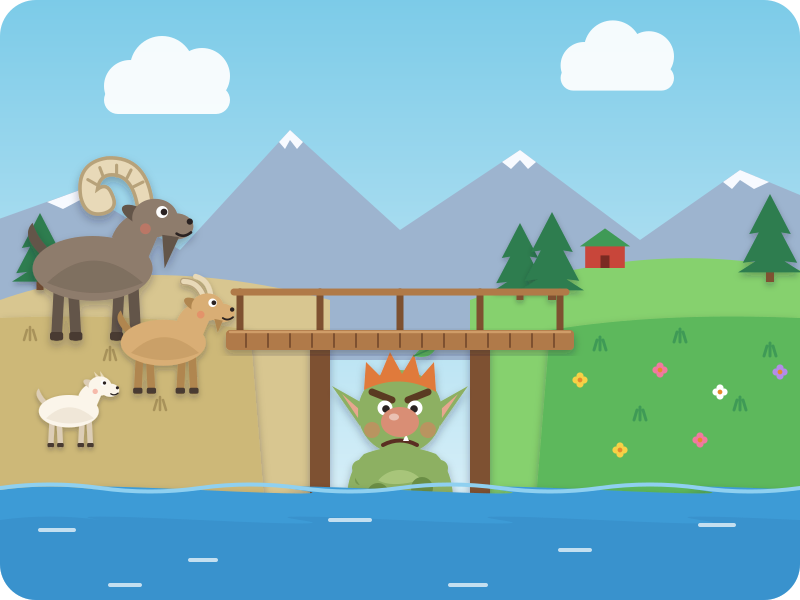
A folk tale from Norway
The Three Billy Goats Gruff
"Story, story — are your ears open?" Kai: "Open!"
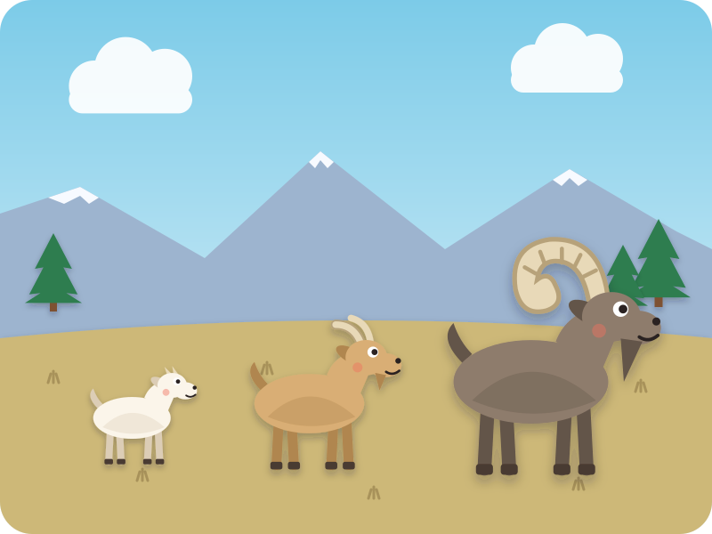
Once upon a time there were three billy goats, and they were all called Gruff.
A little goat, a middle goat, and a great big goat. Kai shows little, middle, BIG with his hands
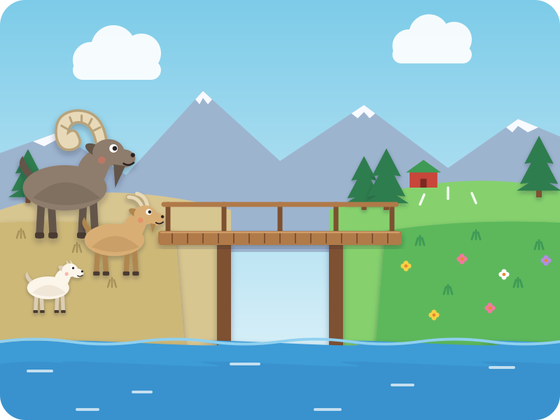
The goats were hungry. On their side of the river, the grass was all gone.
But over the bridge, the hill was green and sweet. "Let's go up there and get nice and fat!" said the goats.
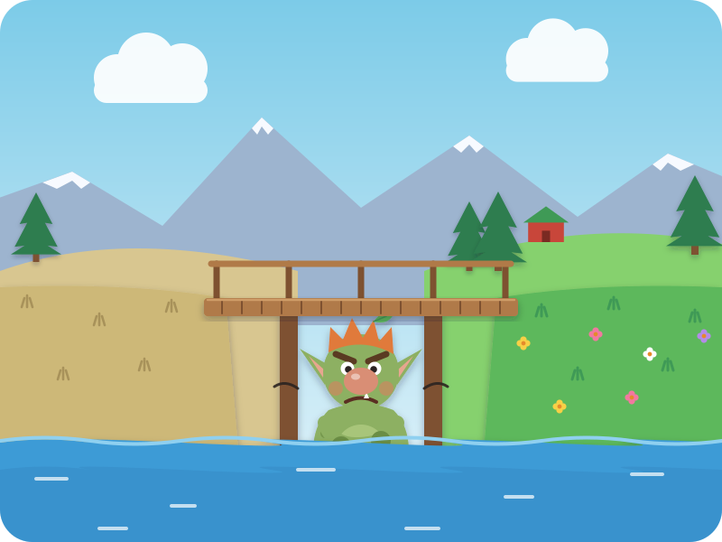
But under the bridge lived a troll. He had a nose like a potato, hair like a carrot top, and one silly tooth.
And he was grumpy. He did not like anybody going over his bridge.
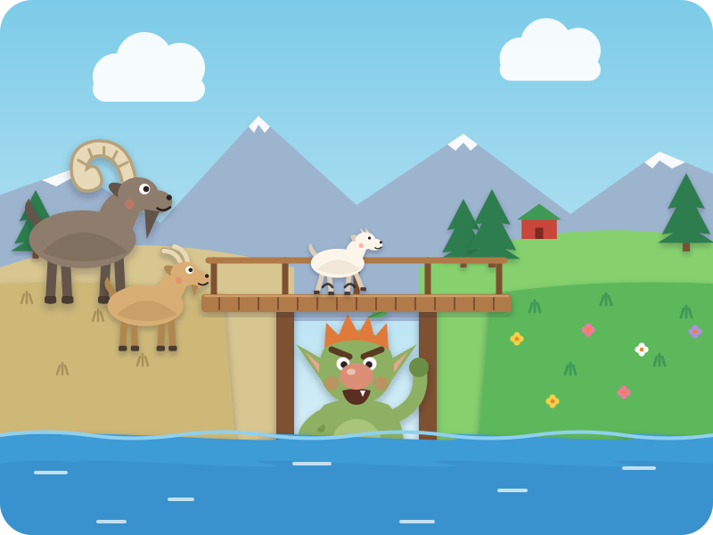
First went the little goat. "trip, trap, trip, trap" Kai taps his knees, very softly
"WHO'S THAT tripping over my bridge?" Kai, in a big troll voice
"Only me, the little billy goat Gruff."
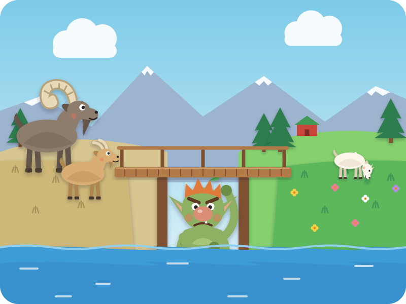
"I'm going to gobble you up!" said the troll.
"Oh, don't gobble me — I'm too little," said the little goat. "Wait for the next goat. He's much bigger!"
"Hmph. Off you go, then." Munch, munch!
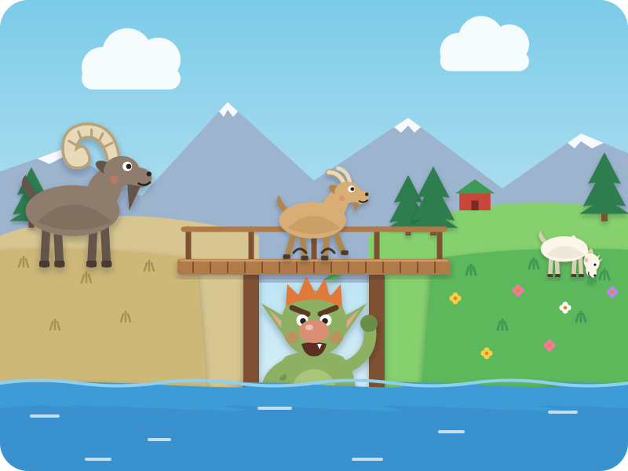
Next went the middle goat. "Trip, trap! Trip, trap!" Kai taps a little louder
"WHO'S THAT tripping over my bridge?" troll voice!
"It's me, the middle billy goat Gruff."
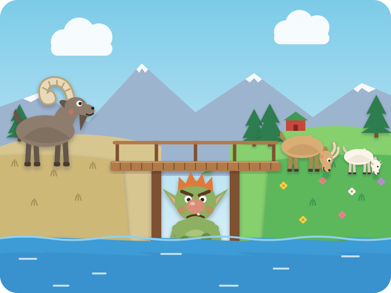
"I'm going to gobble you up!"
"Oh, don't gobble me," said the middle goat. "Wait for the next goat. He's the biggest of all!"
"Hmph. Off you go, then." Munch, munch!
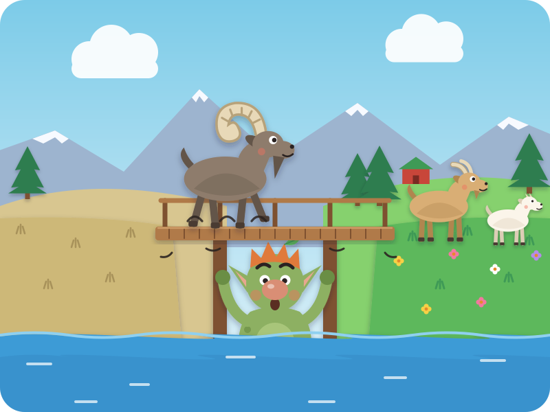
Then came the big goat. "TRIP, TRAP! TRIP, TRAP!" Kai stomps his feet The whole bridge wobbled!
"WHO'S THAT tramping over my bridge?"
"IT'S ME — THE BIG BILLY GOAT GRUFF!"
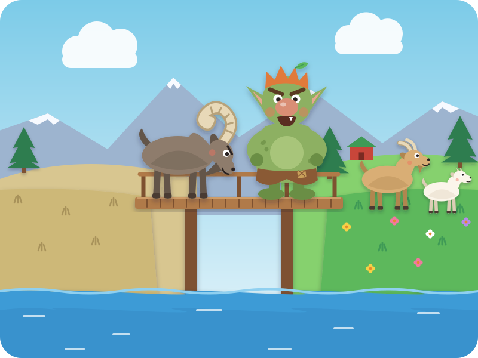
Up climbed the troll. "I'm going to gobble you up!"
"Well, come along, then!" said the big goat. And he put his head down, and his great curly horns too…
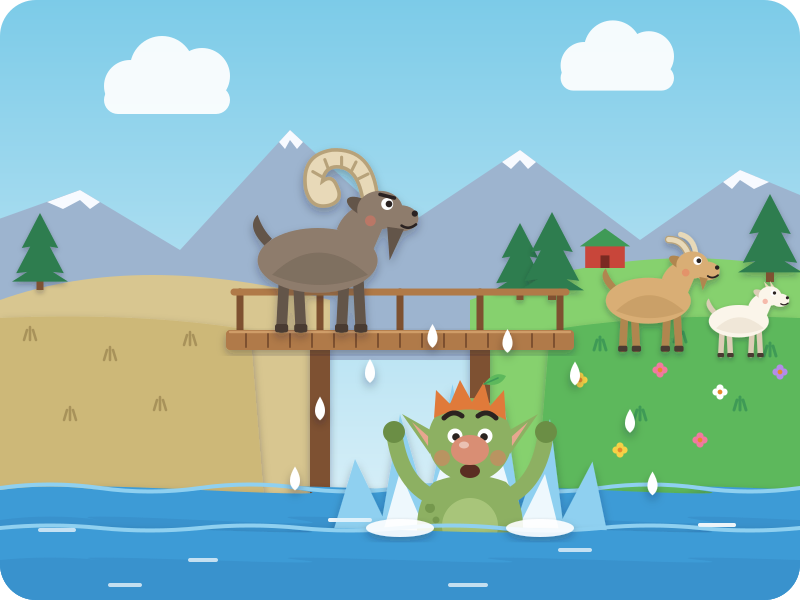
…and he gave that troll a great big BUMP!
Off the bridge went the troll, down, down, down — SPLASH! Kai splashes his hands
Right into the river.
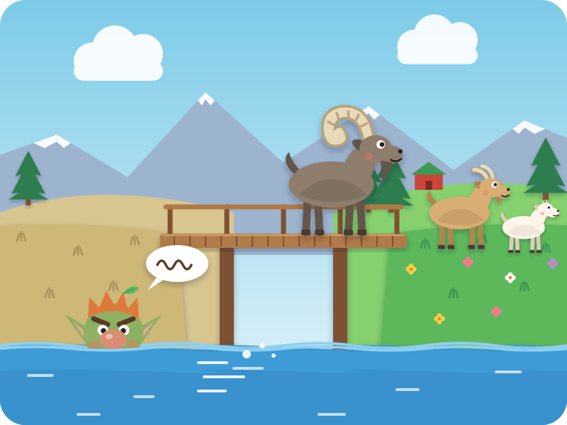
The soggy troll swam away down the river. "Grumble, grumble, grumble…" Kai grumbles
And he never bothered the billy goats again.
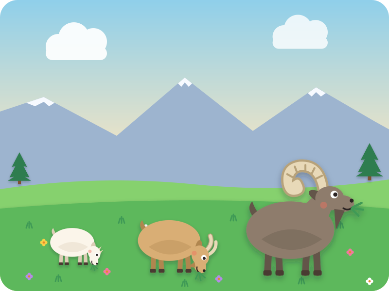
Up on the green hill, the three billy goats Gruff ate, and ate, and ate. Munch, munch, munch! Kai munches
They got so fat they could hardly walk home. And if they haven't got thin again… they're fat still!
The End
"Snip, snap, snout — this tale's told out."
Swipe back to read it again
Driving? Tell it without the page · six beats
The picture book is for home, bedtime, or a passenger. In the car, tell it from memory — bold is Kai's part.
- Three billy goats called Gruff — little, middle, BIG — want the green grass over the bridge.
- Under the bridge lives a grumpy troll with a potato nose, who doesn't like anyone on his bridge.
- The little goat goes first — "trip, trap" (softly) — and the troll roars "WHO'S THAT tripping over my bridge?" "Don't gobble me — wait for the next goat, he's bigger!"
- The middle goat — "Trip, trap!" (louder) — "WHO'S THAT tripping over my bridge?" "Wait for the biggest of all!"
- The big goat — "TRIP, TRAP!" (stomp!) — puts his head down and bumps the troll off the bridge: SPLASH!
- The troll swims away grumbling and never comes back, and the goats eat till they're fat — munch, munch, munch!
After the story · car-friendly wondering
"Can you do a little trip-trap, a middle trip-trap, and a BIG trip-trap?"
"Why did the troll let the little goat go?"
"If you met that grumpy troll, what could you say to cheer him up?"
Where this story comes from
This is a Norwegian folk tale, De tre bukkene Bruse, collected by Peter Christen Asbjørnsen and Jørgen Moe in Norske Folkeeventyr (Norwegian Folk Tales), first published in the 1840s. It's best known in English from George Webbe Dasent's translation in Popular Tales from the Norse (1859), where "Bruse" became "Gruff" — and Dasent's version ends with "Snip, snap, snout, this tale's told out", the very rhyme we close every book with. In the old telling the three goats are going up the hillside to make themselves fat; the troll, with eyes like saucers and a nose like a poker, threatens to gobble each one; the two smaller goats tell him to wait for a bigger one; and the big goat fights him and tosses him into the river in a rather rough way. This retelling is our own, for a 4-year-old: the big goat just bumps the troll into the water, and the troll swims off grumbling instead of coming to harm. The bare grass on the goats' side and the troll's potato nose, carrot hair and silly tooth are our picture-book choices, not details from the old tale.